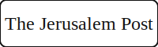
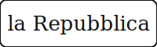

About the Founder
Private Cyber Defense for High-Risk Individuals — Led by Dr. Tabansky
Dr. Lior Tabansky is a global cyber‑resilience authority selected for sensitive engagements where discretion, speed, and outcomes matter more than buzzwords. With two decades of hands‑on work across Israel, Asia, Europe, and Africa, his leadership anchors thought leadership in practical, operational experience.
Core Expertise
- Strategic judgment under pressure. Adversary‑view analysis paired with executive‑level decision support.
- Proven cybersecurity frameworks. Leverages state‑grade methods trusted by three‑letter agencies and Fortune 500 enterprises
- Exquisite tradecraft. Tailors optimal solutions using deep and broad familiarity with the state of the art.
- Crisis‑grade judgment. Red‑team thinking integrated with legal awareness and executive calm.
Media & Public Recognition
Positioned as a go‑to analyst on spyware controversies, Israel–Iran cyber confrontation, and critical‑infrastructure risk.
-
The Washington Post
Analysis on the Iran–Israel cyber confrontation.
View coverage -
AP News
Quoted on the Iran steel-sector cyberattack.
View coverage -
Le Figaro
Quoted during the Pegasus disclosures.
View coverage -

The Jerusalem Post
Feature on Pegasus allegations.
View coverage -

la Repubblica
Assessment on the Israel–Iran cyber front.
View coverage -
RAI 1 – Codice
On-air expert segment; episode page on RaiPlay.
View coverage
Schedule a Consultation
Coordinate a confidential session directly with Dr. Tabansky. Use the secure messaging options in the footer or request an alternative channel.